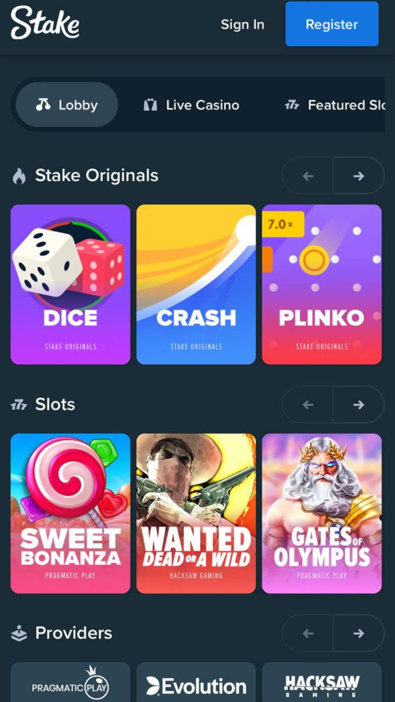

- 
-

-

Jak výrobci her vypočítávají ukazatel RTP
Ukazatel RTP (Return to Player) je jedním z nejdůležitějších faktorů, které hráči zvažují při výběru her v online kasinech. Tento ukazatel udává procentuální poměr výher, které hráči mohou očekávat zpět z jejich sázek na dlouhodobé hraní:
- Matematické modely. Výrobci her používají matematické modely k určení ukazatele RTP. Tyto modely zahrnují simulaci milionů her a sázek, aby se určila průměrná hodnota výher. Výrobci her také zvažují různé faktory, jako jsou frekvence výher, velikost výher a frekvenci bonusových kol, aby určili celkovou hodnotu RTP.
- Testování her. Po vytvoření matematického modelu výrobci her testují hru, aby ověřili přesnost ukazatele RTP. Toto testování se provádí pomocí simulací a testování v reálném prostředí. Testovací týmy hrají hru opakovaně, aby se určila průměrná hodnota výher a ověřila přesnost ukazatele RTP.
- Nezávislé testování. Výrobci her také používají nezávislé testovací agentury, aby ověřili přesnost ukazatele RTP. Tyto agentury provádějí nezávislé testy a simulace, aby ověřily, zda ukazatel RTP odpovídá skutečnosti. Tyto nezávislé testy pomáhají zajistit, aby hráči dostávali spravedlivé a náhodné výsledky.
- Průběžná kontrola. Výrobci her také provádějí průběžnou kontrolu ukazatele RTP, aby se ujistili, že hodnota zůstává přesná. Tato kontrola se provádí pomocí průběžného monitorování her a analýzy výsledků. Pokud se ukazatel RTP liší od očekávané hodnoty, výrobci her provádějí další testy a úpravy, aby se hodnota vrátila zpět k očekávanému stavu.
Výrobci her používají matematické modely, testování her, nezávislé testování a průběžnou kontrolu k určení a ověření ukazatele RTP. Tento proces je důležitý pro zajištění spravedlivých a náhodných výsledků pro hráče a pro zajištění, aby hráči dostávali spravedlivou hodnotu za své sázky.